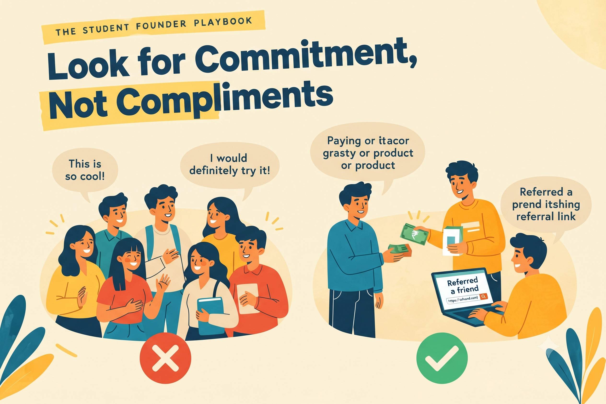

Look for Commitment, Not Compliments

EIC MBM
Published on October 12, 2026

Deciding where to spend limited time depends on telling genuine interest apart from politeness. It is one of the most valuable skills a founder can develop.
Compliments Are Cheap
This is so cool or I would definitely try it costs the other person nothing to say. Many people offer praise because they do not want to disappoint you, and the words feel encouraging in the moment. Compliments can be a good starting point for a conversation, but treating them as proof of demand is one of the most common and expensive mistakes a founder makes.
Commitment Has a Cost
Real interest shows up as action that costs the other person something: time, money, contact details, reputation, or attention. When someone spends part of a limited resource on your idea, they are telling you something true. Commitment is harder to give than a compliment, which is exactly why it carries so much information.
A friend can say they love your idea in a single message. Getting them to change their routine for it is a much larger step. The gap between those two actions is where you learn what people genuinely value.
Signs That Interest Is Genuine
Look for behaviour rather than enthusiasm. A genuinely interested person asks when they can start, or what the next step is. They pay, even a small amount, or agree to a trial with a clear deadline. They refer a friend without being asked. They come back to talk about the problem a second time and bring new details with them. They give specific, critical feedback instead of only praise, and they make time in their schedule for a follow-up conversation. Most of these signs are difficult to fake, which is what makes them valuable. Notice when someone gives you one of them, and treat it as a meaningful event rather than a routine reply.
A Study Planner Example
A student showed her study planner idea to ten friends. Eight of them said they loved it. Two weeks later she sent a message asking who wanted to try the first version. Only two replied. One asked how to sign up and what the first week would look like. The other sent a list of things that confused them in the sample she had shared.
Those two became her focus and, later, her first real users. The eight compliments made her feel good, but the two actions told her exactly where to start. That shift in attention is the core of this lesson.
Sort Your Contacts into Three Groups
Go back to the people you have spoken with and place each one into one of three groups. The first group gave only compliments. The second asked for more information or said they would think about it. The third took action: they replied, tried the product, paid, or referred someone. Spend most of your next week on the third group, and then gently test the second group with a specific request. Avoid spending much time convincing the first group.
This may feel harsh, but it is kind to yourself and to them. It keeps your effort focused on people who are going to help you learn, and it spares everyone the awkwardness of a relationship built on politeness alone.
Ask for a Specific Next Step
One of the best ways to test commitment is to ask for something small and specific. Do not ask whether they think the idea is good, because that invites a polite yes. Ask instead whether they can try it this Friday and tell you what went wrong. If they agree and follow through, you have learned something valuable. If they stop responding, that silence is also a useful answer, and it is much cheaper to learn than months of misplaced effort.
Key Takeaway
Behaviour, not enthusiasm, is the only reliable evidence of demand.
Reflect
What is one action someone has taken for your idea, even a small one?